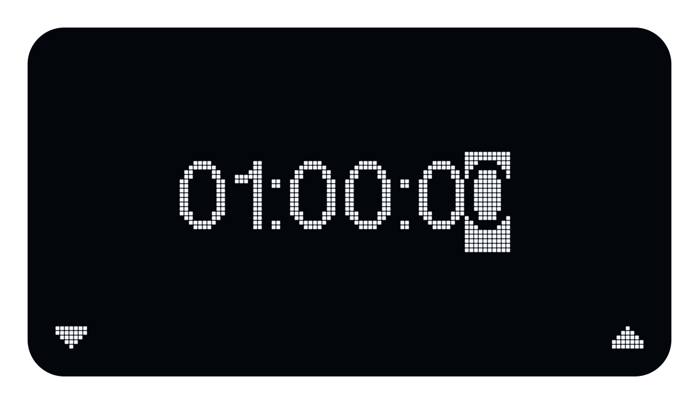
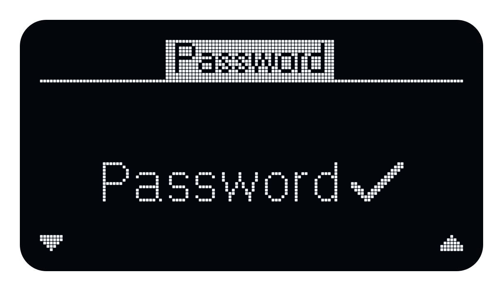

System Menu
On this page
Navigation
Press M on the Home screen to open the system menu. Use the L and R buttons, indicated by the arrows on the display, to move through the options. Press M to select an item.
In a submenu, select Back to return to the main menu. Select Exit to return to the Home screen, or press and hold M from anywhere in the menu.
Entering a time
Time is entered as hours, minutes and seconds (hh:mm:ss). Use the down and up arrows to change the highlighted digit, then press M to accept it and move to the next digit. When you accept the final digit, the time is stored and Echo returns to the menu.

Entering text
When entering a device or network password, use the arrow buttons to select a character and press M to accept it. To delete the previous character (backspace), select the left-pointing character and press M. When the text is complete, select the checkmark and press M to store it and return to the menu or connect to the network. To abort text entry, press and hold M.

The main menu contains Power, Output, Timer, Network, Service and Exit.
Power
| Item | Description |
|---|---|
| Off | Switch device to standby or power off |
| Auto-off | Configure automatic power-off timer |
| Battery | Display battery information |
| USB | Display USB power information |
| Back | Return to previous menu |
| Exit | Return to Home screen |
Output
| Item | Description |
|---|---|
| Speaker | Enable speaker output |
| BNC | Enable BNC output |
| Speaker+BNC | Enable both outputs |
Timer
| Item | Description |
|---|---|
| Timer | Enable or disable playback timer |
| Duration | Configure playback duration |
| Back | Return to previous menu |
| Exit | Return to Home screen |
Network
| Item | Description |
|---|---|
| Mode | Select Off, Station or Hotspot |
| Connect | Connect to an access point |
| Forget | Remove stored access point |
| Device pwd | Configure the device password |
| Info | Display network information |
| Back | Return to previous menu |
| Exit | Return to Home screen |
Service
| Item | Description |
|---|---|
| About | Display firmware information |
| Help | Display QR code linking to documentation |
| Update | Update firmware |
| Self-test | Perform self-test |
| Reset | Restart the device |
| Back | Return to previous menu |
| Exit | Return to Home screen |